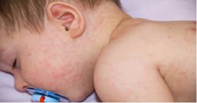
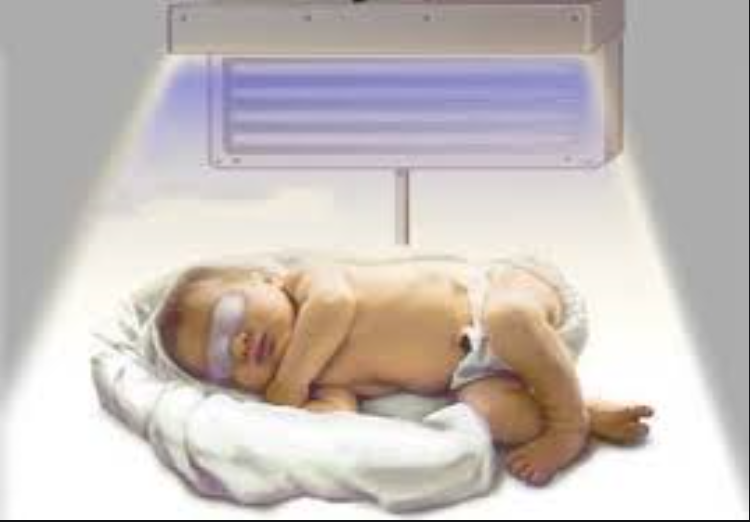

خدمات العيادة

علاج حالات التبول اللاارادى عند الاطفال

تشخيص حالات حساسية الجلد والصدر

علاج امراض سوء التغذية ونقص النمو ولين العظام

علاج الحالات الحرجة عند الاطفال
تشخيص وعلاج جميع حالات السمنة

تشخيص حالات حساسية الالبان
تشخيص اسباب وطرق علاج حساسية الصدر فى الاطفال
علاج امراض سوء التغذية ونقص النمو ولين العظام
التبول اللاارادى ,المتلازمة النفروزية,العيوب الخلقية
تشخيصها ووضع الخطة العلاجية المناسبة لكل طفل
تشخيص وعلاج حساسية الالبان واضطراب الجهاز الهضمى
دكتورة الشيماء محمد مفتاح حاصلة على بكالوريوس الطب والجراحة وماجستير طب الاطفال وحديثى الولادة
وعضو الجمعية المصرية للتغذية العلاجية
علاج حالات التبول اللاارادى عند الاطفال
تشخيص حالات حساسية الجلد والصدر
علاج امراض سوء التغذية ونقص النمو ولين العظام
علاج الحالات الحرجة عند الاطفال
تشخيص وعلاج جميع حالات السمنة
تشخيص حالات حساسية الالبان